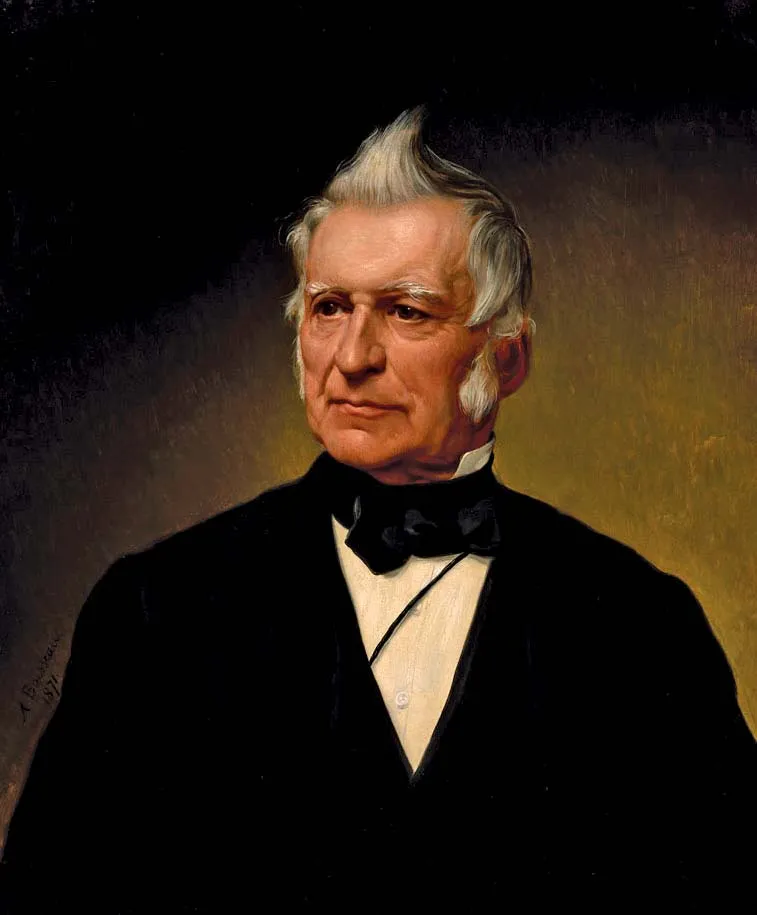
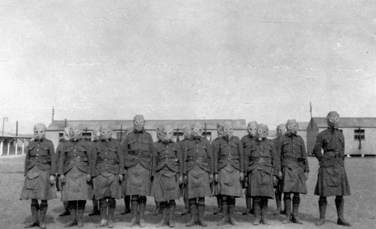

L'histoire du Québec de -40 000 avant J-C jusqu'à aujourd'hui
Introduction
Vous ne vous êtes jamais demandé pourquoi on parle français au Québec ?
Il s’agit techniquement du seul endroit de toute l'Amérique où cette langue est utilisée.
Si vous voulez en connaître la raison, il suffit de se pencher sur l’histoire extrêmement riche de la province. Depuis la “découverte” du territoire par Jacques Cartier en 1534, la communauté française n’a jamais cessé d’évoluer et de se battre pour protéger sa langue, sa culture et sa religion contre les populations anglophones.
Et c’est justement ce dont je veux parler sur ce site : l’histoire fascinante du Québec et de sa population.
Mais avant de commencer, intéressons-nous brièvement aux premières nations, qui ont vécu pendant plusieurs siècles sur le continent.
Carte de l'évolution territoriale du Québec
Les premières nations
Les populations autochtones auront occupé le territoire de l’Amérique du Nord pendant plusieurs milliers d’années. Cela expliquera pourquoi elles seront si bien adaptées au climat du continent.
Mais comment seront-elles arrivées là ?
La théorie la plus plausible et la plus acceptée sera que des populations asiatiques auront emprunté un pont naturel nommé le détroit de Béring, reliant une partie de l’Asie à l’Alaska. Ce détroit serait apparu lors de l’abaissement du niveau de la mer, conséquence de la formation des glaciers continentaux.
Beaucoup d’échanges d’animaux et de plantes auraient eu lieu entre les deux continents grâce à ce passage. De nombreux scientifiques penseront d’ailleurs que la Béringie aura joué un rôle clé dans l’évolution de plusieurs espèces.

Pendant ces plusieurs milliers d’années, les Autochtones auront développé un mode de vie très différent de celui des Européens de cette époque.
Beaucoup d’entre eux seront nomades et chasseurs-cueilleurs. Ils vivront en petites communautés, et les chefs ne seront pas choisis selon leur statut social, mais plutôt pour leurs capacités à la chasse ou leur talent d’orateur.
D’autres seront sédentaires, comme les Iroquoiens : en plus de la chasse, ils feront pousser plusieurs plantes, comme le maïs.
Les relations entre les différents groupes seront très variées. Il y aura des échanges entre les différentes nations, ce qui permettra à tout le monde, même aux Inuits, d’avoir accès à des ressources provenant de tout le continent.
Il y aura aussi des guerres entre les nations, mais elles ne seront pas aussi violentes que les guerres européennes. Il y aura peu de morts, car on préférera capturer des prisonniers de guerre plutôt que de tuer. Le but de cette pratique sera de remplacer d’anciens membres décédés de la tribu. Ainsi, malgré le fait que ces prisonniers seront techniquement des ennemis, les Autochtones les traiteront comme des membres de leur tribu.
Une approche très différente des guerres sanglantes que l’on retrouvera en Europe.
Mais l’aspect qui différenciera le plus les Autochtones des Européens, ce sera leur relation avec la nature.
Les Autochtones pratiqueront la vie de subsistance, ce qui signifie qu’ils ne chercheront que le nécessaire. Lorsqu’ils chasseront, ils s’arrêteront une fois qu’ils auront assez de viande pour nourrir tout le monde. Leur objectif sera de survivre tout en respectant la nature, et non d’accumuler des richesses.
La raison ? Les nations penseront que chaque élément de la nature (plante, animal, fruit, etc.) possède un esprit et doit être respecté. La spiritualité autochtone sera très complexe, et de nombreuses légendes et mythes seront transmis oralement de génération en génération. Chaque tribu possédera un guide spirituel qui communiquera avec les esprits.
Vers le début du 16e siècle, de nombreux pêcheurs partiront pêcher au Nouveau Monde. En effet, l’explorateur italien Jean Cabot affirmera que la région de Terre-Neuve regorge de poissons, ce qui incitera plusieurs personnes à aller y pêcher.
C’est durant ces voyages que les Européens feront du troc avec les Premières Nations. Ils échangeront des outils en métal contre de la viande ou des peaux de castor.
Malheureusement, de nombreux Autochtones décéderont à cause des maladies européennes, car ils ne posséderont pas les anticorps nécessaires pour s’en défendre.
Malgré cela, les relations resteront bonnes, ce qui permettra la création d’une colonie comptoir (une colonie ayant pour unique but de fournir des ressources à la métropole).
Mais surtout, les Autochtones partageront de nombreuses techniques pour survivre à l’hiver, facilitant ainsi l’installation des Européens par la suite.

Arrivée de Jacques Cartier et première tentative de colonisation
C’est vers 1600 que le roi de France, François 1er, décidera de s’intéresser à l’Amérique du Nord. C’est dans ce contexte que Jacques Cartier partira pour le Nouveau Monde dans le but de préparer le territoire pour une future installation. Lors de son premier voyage en 1534, il sera accompagné par 60 marins et ils seront les premiers à explorer le fleuve Saint-Laurent. C’est durant ce voyage qu’ils installeront la fameuse croix à Gaspé, mais ce que beaucoup de gens ne savent pas, c’est que les Iroquoiens protesteront contre l’installation de la croix, mais Jacques Cartier leur dira qu’il ne s’agit que d’un simple repère pour faciliter la navigation. Après ça, 2 autres voyages seront organisés par le roi de France. Le deuxième voyage sera une catastrophe : les Européens n'écouteront pas les conseils des Autochtones et ils kidnapperont même 10 Iroquoiens, dont le chef de la tribu : Donnacona. Durant le troisième voyage, Cartier essayera d’installer la première colonie dans le Nouveau Monde, mais entre la difficulté liée à l’hiver, mais aussi les autochtones qui attaqueront le fort pour se venger des 10 membres de leur tribu que les Européens auront kidnappés, Jacques Cartier et ses hommes retourneront en France et la tentative sera un échec total. Il faudra attendre presque 50 ans pour revoir des tentatives de colonisation qui seront toutes un échec. (Image : Recontre de Jacques Cartier avec Donnacona)

Samuel de Champlain et Québec
En 1608, un homme tentera à nouveau de créer une colonie en Amérique du Nord.
Cet homme, c’est Samuel de Champlain. Avant Québec, il aura déjà essayé d’établir une colonie nommée Port-Royal, mais ce projet échouera en raison de son coût trop élevé.
Dans l’optique de fonder une colonie durable, Champlain découvrira un territoire très prometteur : Québec. Son emplacement sera idéal, car il offrira une défense naturelle facile et sera proche d’un important réseau d’échange maritime, favorisant ainsi le commerce.
Malgré le froid, le scorbut, de nombreuses pertes humaines et même une tentative d’assassinat, Québec verra le jour en 1608.
Samuel de Champlain décédera le jour de Noël 1636.
En 1642, Jeanne Mance et Paul Chomedey de Maisonneuve fonderont Montréal.
Durant les cent années suivantes, la colonie connaîtra une grande prospérité, notamment grâce aux politiques mises en place par la France, comme le programme des Filles du roi, qui encouragera de nombreux colons à s’installer en Nouvelle-France. L’essor de la traite des fourrures, en particulier la peau de castor, stimulera également l’économie locale.
Malheureusement, cette période faste ne durera pas éternellement…
La guerre de Sept ans
Vers le milieu du 18ᵉ siècle, une guerre oppose la France et la Grande-Bretagne, ainsi que leurs alliés, et fait des ravages en Europe. Afin de soutenir leur métropole, les colonies des deux pays s’engageront également dans la guerre, ce qui sera le cas de la Nouvelle-France et des treize colonies.
Au début, les batailles seront très serrées, mais après un certain temps, des alliés britanniques viendront renforcer la colonie, tandis que la France décidera d’abandonner la Nouvelle-France pour se concentrer sur sa métropole.
Cette décision permettra aux Britanniques de prendre plusieurs forts français, de remonter le fleuve Saint-Laurent et d’atteindre Québec. Une armée britannique, dirigée par le général James Wolfe, passera par l'anse au Foulon, un territoire mal gardé, ce qui permettra aux Britanniques de mener une attaque surprise. Cette attaque leur permettra de remporter une bataille décisive : la bataille des Plaines d'Abraham.
Après cette victoire, les Anglais assiégeront Québec, qui capitulera quelques jours plus tard. Quelques mois plus tard, les Anglais tenteront d’assiéger Montréal, mais le gouverneur général capitulera avant même que le siège ne commence, car il savait qu’ils n’avaient aucune chance face à l’armée britannique.
Plusieurs éléments expliqueront la défaite de la Nouvelle-France : d’abord, l’absence de soutien de la part de la métropole, ce qui constituera une raison majeure. Ensuite, les mauvaises décisions prises, ainsi que le nombre impressionnant de soldats inexpérimentés, auront également contribué à cette défaite.

Grâce aux négociations de la France, les habitants de la Nouvelle-France auront 18 mois pour quitter la colonie et retourner en Europe. Cependant, peu de citoyens partiront, car beaucoup se considéreront davantage comme Canadiens français que comme Français tout court.
Cela ne facilitera cependant pas la tâche des Britanniques, qui ne sauront pas quoi faire d'eux. Afin de résoudre cette problématique, le gouvernement britannique mettra en place plusieurs politiques visant à les assimiler. Parmi ces politiques, on trouvera la restriction de leurs droits, l’interdiction de pratiquer leur religion, l'empêchement d’occuper des postes importants dans le gouvernement, et même l’élimination de la langue française au sein du parlement.
Malgré toutes ces mesures, les Français continueront de se battre, et plusieurs figures comme Louis-Joseph Papineau défendront les droits des Canadiens français.
Malheureusement, les revendications deviendront de plus en plus nombreuses, et Londres ne pourra pas tout accepter si elle veut, un jour, réussir à assimiler toutes ces personnes…
La rébéllion des Patriotes
En 1837, d’importantes rébellions auront lieu un peu partout en Amérique du Nord. Au Bas-Canada, les Canadiens français demanderont plus de pouvoir politique, car le système actuel ne les avantage pas du tout. Leur pouvoir politique restera très restreint, même lorsqu’ils seront en majorité à la chambre d’assemblée.
C’est donc dans l’objectif de changer les choses que le Parti Patriote (dirigé par Louis-Joseph Papineau) rédigera une liste de 92 résolutions qui demandera, entre autres, une plus grande autonomie gouvernementale (tout en restant des sujets britanniques).
Malheureusement, Londres ignorera les revendications et d’autres événements jetteront encore plus d’huile sur le feu. C’est principalement à cause de ces événements que les Québécois se verront obligés de prendre les armes pour changer les choses.
Il y aura aussi des rébellions au Haut-Canada, car eux aussi veulent un gouvernement autonome.
(Portrait de Louis Joseph Papineau)

Les patriotes seront divisés en 2 groupes. Un groupe plus modéré voudra faire changer la situation sans prendre les armes, dirigé principalement par Louis-Joseph Papineau. Un autre groupe, beaucoup plus radical, sera prêt à se battre pour faire entendre ses revendications.
Face à eux, il y aura la gigantesque armée britannique : plus nombreux, mieux préparés et mieux formés. Les premières confrontations se passeront bien pour les patriotes, qui réussiront à affaiblir l’armée britannique et même à remporter plusieurs batailles, comme celle de Saint-Denis. Malheureusement, bien qu’ils soient déterminés, les patriotes resteront moins équipés, organisés et formés que les Britanniques, ce qui les empêchera de tenir longtemps face aux Anglais.
Ils perdront donc l’avance qu’ils auront sur les Britanniques et échoueront dans plusieurs batailles, comme celle de Saint-Eustache, qui marquera la fin des premières confrontations. Les conséquences de ces premiers affrontements ? Plusieurs patriotes morts, d’autres blessés et certains capturés. Quant aux chefs, ils devront fuir le pays, car même les modérés, comme Louis-Joseph Papineau, seront recherchés.
Malgré tout, Papineau continuera à donner des conférences et incitera la population à réagir face aux problèmes du Bas-Canada.
Les secondes confrontations auront lieu en 1838. Cette fois, les patriotes bénéficieront du soutien de sympathisants américains. Malgré cela, ils resteront désorganisés, mal formés et mal équipés, ce qui les empêchera de gagner les batailles importantes.
De plus, afin de stopper les rébellions, des prisons seront construites un peu partout pour accueillir les patriotes. Cette solution sera presque suffisante pour faire cesser la rébellion, car les patriotes n’auront presque aucune chance face à l’armée s’ils sont emprisonnés. Ils perdront donc la "guerre" en 1838.
Les conséquences de cette défaite : plusieurs centaines de patriotes seront enfermés dans les fameuses prisons, certains seront condamnés à quelques années de prison, d’autres exilés en Australie, tandis que les moins chanceux seront tout simplement exécutés, sans oublier tous les morts et blessés.
Cependant, ces sacrifices ne seront pas en vain, car Londres décidera d’envoyer un homme pour enquêter sur les rébellions.
(Une représentation de la bataille de Saint-Eustache)

Durant son enquête, Lord Durham découvrira petit à petit les problèmes économique et politique du Bas-Canada qui auront causé la rébellion. Il fera un rapport avec ses recommandations pour régler ces problèmes et éviter d’autres confrontation armées. Selon lui, le problème majeur serait la constitution. En effet, dans le modèle actuel, les Canadiens français ont trop peu de pouvoir, alors que le gouverneur britannique (qui n’a aucun sentiment d’appartenance) en a beaucoup trop. Ce qui peut créer des situations de corruption et aussi rendre mécontents les Québécois qui voient leur pouvoir brimé. Sauf que d’un autre côté, accorder la responsabilité ministérielle au Bas-Canada empêcherait toute assimilation de la population. C’est donc pour ça que Durham proposera d’unir le Haut et le Bas-Canada et de leur donner l’autonomie politique. Cela devrait régler les problèmes, et les Canadiens français ne devraient pas avoir trop de pouvoir, car ils seront en minorité. Le gouvernement britannique décidera d’écouter Durham et mettra en place l'Acte d'Unionl’Acte d’union, une nouvelle constitution qui unifiera politiquement les 2 Canada. Malgré ça, la reine décidera de ne pas accorder la responsabilité ministérielle, ce qui poussera les Canadiens anglais et français à s’unir politiquement afin de militer. Cette alliance improbable unira les réformistes de La Fontaine et ceux de Baldwin, et ce sera 10 ans après la fin des rébellions (1848) que le gouvernement responsable sera accordé au Canada-Uni, ce qui marquera un nouveau chapitre dans l’histoire du Canada. Le plan d’assimilation de Durham sera un échec et on peut même affirmer que fusionner les chambres d’assemblées aura été une mauvaise idée d’assimilation.(Portrait de : Durham, La Fontaine et Baldwin)

.png)
AANB
Après le rapport Durham, plusieurs problèmes économiques et politiques remettront en doute l’actuelle constitution. C’est dans le but de régler ces problèmes que des politiciens formeront la grande coalition. Leur objectif principal sera de régler l’instabilité ministérielle de la province, mais ils chercheront aussi à être plus autonomes face à la Grande-Bretagne.
Pour ce faire, ils essayeront d’inviter d’autres colonies britanniques afin de former un dominion. Ils promettront plusieurs avantages, comme un chemin de fer transcontinental ou encore une armée pour les protéger. Seules les îles déclineront l’offre, car le chemin de fer ne pourra les atteindre.
L’Ontario, le Québec, le Nouveau-Brunswick et la Nouvelle-Écosse formeront donc le Dominion du Canada et, au fil des ans, d’autres provinces rejoindront l’amalgame (la dernière sera le Nunavut en 1999).
(Photo de John A. MacDonald, premier ministre du Canada et membre important de la grande coalition)

L'industrialisation
Vers 1850, le Canada se lancera dans le monde de l’industrialisation sans savoir que cela changera son histoire radicalement. Comme tous les pays industrialisés à cette époque, cela sera une catastrophe : le manque de lois, les embaucheurs peu scrupuleux, ou encore le fait que la main-d’œuvre ne soit pas protégée rendra cette époque terrible, surtout pour les classes ouvrières qui, en plus, ne gagneront presque rien du tout.
C’est aussi durant cette époque que le chemin de fer se développera, ce qui favorisera la croissance économique du pays. Ce sera également à cette époque que des canaux apparaîtront partout dans la région, comme le canal Lachine. Ceux-ci faciliteront encore plus le transport entre les villes.
(Image d'ouvrier dans le textile)

La première guerre mondiale
En 1914, une guerre d’envergure mondiale débutera en Europe. Le Canada, étant une colonie britannique, sera donc obligé de participer à cette guerre. Le pays entrera en guerre en août 1914, au même moment que la Grande-Bretagne. Peu de temps après, ils adopteront les mesures de guerre, ce qui conférera plus de pouvoir au gouvernement.
Celui-ci demandera aussi beaucoup d’argent (via les obligations de la victoire) afin de financer la formation des soldats, l’armement, etc. En parlant des soldats, certains rejoindront l’armée britannique (CEC) et participeront à des batailles décisives, comme celle d’Ypres ; d’autres, eux, resteront au Canada.
Les Québécois, quant à eux, ne voudront pas participer à la guerre, car ils ne verront pas l’intérêt d’aider les pays en guerre. La partie anglophone du Canada, qui est extrêmement loyale à la couronne, critiquera ce manque d’engagement de la part du Québec, ce qui divisera encore une fois les francophones des anglophones.
La fin de la guerre sera chaotique. Après l’adoption de la conscription obligatoire en 1917, beaucoup de Québécois protesteront en faisant des émeutes. La dette publique explosera et les alliés seront dans une mauvaise posture. Heureusement, en 1917, les ÉU entreront en guerre, ce qui retournera la situation, et la guerre se terminera en 1918 avec le traité de Versailles.
Après la guerre, les femmes obtiendront le droit de vote un peu partout dans le pays, sauf au Québec à cause de l’église, et les tensions entre Français et Anglais seront importantes. Mais le Canada n’aura pas vraiment de « récompense » à la hauteur de l’implication du pays lors de la guerre.
(Photo : soldat lors d'un exercice avec les masques à gaz)

Les années folles et la grande dépression
Pour fêter la fin de la guerre au Québec et partout dans le monde, les gens décideront de profiter de leur vie. On appellera cette période les années folles.
Plusieurs services publics et infrastructures seront mis en place par le gouvernement et les villes afin d’améliorer le mode de vie des populations ouvrières, qui ont vécu dans la misère pendant la révolution industrielle.
L’économie nord-américaine se développera énormément durant ces années et prendra même une place importante dans l’économie internationale, car elle sera une des seules zones non touchées par la guerre.
De nouvelles inventions, comme la télé et la radio, favoriseront également le développement de la culture québécoise et feront découvrir d’autres cultures aux Québécois, notamment la culture américaine avec le cinéma.
Ce sera justement l’un des problèmes de cette époque : les usines produiront trop, pensant que la population achètera, mais cela ne se produira pas. Les entreprises perdront donc beaucoup de revenus et licencieront plusieurs employés.
La valeur des entreprises baissera, ce qui incitera les investisseurs à revendre leurs actions, que malheureusement, personne ne rachètera. La cause de cette crise : le krach boursier.
Cette période sera marquée par un cycle économique difficile. Il n’y aura pas de programmes pour aider les chômeurs, à l’exception de la charité de la population. Des manifestations auront lieu partout, mais malgré l’intervention du gouvernement, la Grande Dépression continuera de faire des ravages.
Seule la guerre pourra stopper cette période, qui traumatisera plusieurs milliers de Québécois.
La seconde guerre mondiale
Après le traumatisme qu’aura été la Première Guerre mondiale, les Canadiens n’auront pas vraiment envie de participer à une autre guerre de ce genre. Pour la première fois dans l’histoire du Canada, les Canadiens français ET anglais seront contre la conscription obligatoire. Malheureusement, avec la suite des évènements et l’invasion de la Pologne, le Canada ne pourra pas rester neutre pendant très longtemps. Il ne faudra attendre qu’une semaine pour que le Canada déclare la guerre à l’Allemagne. L’entrée en guerre du Canada relancera l’économie du pays, ce qui mettra fin à la Grande Dépression; les usines seront utilisées pour produire des armes et autre équipement de guerre afin de soutenir les Alliés. Comme la Première Guerre mondiale, le gouvernement rationnera la nourriture, les mesures de guerre seront adoptées et les femmes prendront la place des hommes dans les usines. Le premier ministre canadien de l’époque, Mackenzie King, promettra à toute la population de ne pas mettre en place la conscription obligatoire, mais, en voyant la tournure que prend la guerre, il décidera d’organiser des votes partout au Canada afin de voir s’il pourrait revenir sur sa décision et, vu la tournure de la guerre, le oui gagnera. Le gouvernement canadien mettra donc en place la conscription obligatoire en 1940, ce qui, encore une fois, ne fera pas l’affaire des Québécois. Le Canada construira des bateaux, des avions, des bombes, des armes ; les soldats participeront à des batailles majeures comme le débarquement de Normandie, on peut affirmer que le Canada sera d’une grande aide durant la guerre. Malgré ça, comme la première guerre mondiale, ils ne gagneront pas de territoire et ne signeront même pas de traité de paix avec l’Allemagne. Cependant, ce sera pendant la guerre (1940) que les femmes obtiendront enfin le droit de vote au Québec. (Image : débarquement de normandie)

La grande noirceure
Peu de temps avant la fin de la Seconde Guerre mondiale, Maurice Duplessis deviendra le premier ministre du Québec (1944-1959). La période de son mandat sera nommée « la grande noirceur », même si cette métaphore est très exagérée. Cette période ne sera pas la meilleure pour le Québec. Maurice Duplessis est un homme très conservateur et contre les idées libérales ; il donnera la charge de l’éducation et de la santé à l’Église et il encouragera énormément le libéralisme économique. Ces politiques présenteront beaucoup de problèmes, la population sera sous-éduquée comparée aux populations anglophones, les ressources naturelles seront exploitées par des entreprises américaines au détriment des entreprises québécoises et surtout, le Québec aura une évolution lente. La grande Noirceur sera une courte période dans l’histoire du Québec, car Maurice Duplessis décèdera en 1959. (Image Maurice Duplessis)

La révolution tranquille
Après le gouvernement Duplessis, un parti avec une idéologie totalement opposée à celui-ci prendra le pouvoir, il s’agit du Parti libéral dirigé par Jean Lesage. La période de son mandat (et au-delà) se nommera la Révolution tranquille,car, à cette époque, plusieurs réformes seront menées par ce gouvernement afin d’améliorer les conditions de vie au Québec. D’importants changements au niveau de la santé et de l’éducation auront lieu: la création d’hôpitaux publics et la mise en place de plusieurs ministère comme celui de l’Éducation permettront d’éduquer la population du Québec en plus d’offrir des soins plus facilement. Cette époque marquera aussi le début de la laïcisation de la province malgré l’opposition de l’Église. Le gouvernement Lesage mettra aussi en place l'État-providence, ce qui permettra le développement économique, mais aussi de mettre en place plusieurs politiques afin d’aider les Québécois les plus démunis. Cette époque marquera aussi une forte croissance de l’identité nationale. C’est à cette époque que les francophones se désigneront comme Québécois et non comme Canadiens français. (Portrait de Jean Lesage)

Maîtres chez nous
En 1962, le ministre des Richesses naturelles René Lévesque proposera de nationaliser les compagnies d’électricité de la province. À cette époque la majorité étaient privé et n’arrivaient pas à fournir de l’électricité convenablement à toute la province. Régler ce problème serait très favorable au développement de l’économie. C’est grâce à ce projet que les libéraux gagneront les élections de 1962 et lorsqu’ils auront nationalisé toutes les entreprises en 1963, Hydro-Québec deviendra l’entreprise d’état la plus importante du Canada à cette époque. (Pohot de René Levesque)

La crise d'Octobre
Vers les années 70, des membres du Front de libération du Québec kidnapperont 2 hommes politiques; leur objectif sera de lutter contre l’influence anglophone du Québec. Cette crise sera la première fois (et dernière à ce jour) ou le gouvernement fédéral mettra en place les mesures de guerre en période de paix, ce qui rend cet évènement hors du commun. La conclusion de cette crise : Pierre Laporte, ministre de l’Immigration, sera assassiné par le FLQ et James Cross lui sera sain et sauf. (Image de Pierre Laporte)

Crise d'Oka et relation avec les Autochtones
Pendant plusieurs années, les Autochtones seront maltraités au Québec. Leur terre sera volée, les enfants enlevés et assimilés dans les pensionnats (le dernier fermera en 1991), et leurs droits totalement brimés.
Malgré la tentative du gouvernement d’améliorer leurs relations avec ces peuples en leur redonnant leur terre, etc., un évènement majeur aura lieu en 1990 entre les populations autochtones et le gouvernement. Cette histoire commencera lorsqu’un terrain de golf sera aménagé sur un cimetière Mohawk, malgré leur protestation.
Le projet débutera en 1990, ce qui lancera le début de la crise d’Oka. Les Autochtones mettront en place des barrages afin d’empêcher la circulation. Certains iront même jusqu’à s’armer afin de rivaliser avec l’armée canadienne, qui sera sur les lieux pour calmer la situation.
Cette crise fera un mort, plusieurs Autochtones seront arrêtés, mais pas en vain, car le gouvernement décidera d’enfin écouter certaines de leurs revendications. Cette crise jouera aussi un rôle important dans la création de la Commission royale sur les peuples autochtones, une commission qui aura pour but d’améliorer les relations avec les Autochtones et aussi de régler pour de bon tous les problèmes afin d’éviter que d’autres crises similaires se produisent.
Conclusion
Après la Révolution tranquille, le Québec continuera son évolution économique et sociale. Deux référendums auront lieu, en 1992 et en 1995, pour savoir si le Québec devrait devenir un pays à part entière. Le OUI du référendum de 1995 aura été à 1% de gagner.
Beaucoup d’événements détérioreront les relations entre le Québec et le reste du Canada, comme le fait que le rapatriement de la constitution se fasse sans l’accord du Québec.
Au fil des ans, et malgré les différentes complications, la population francophone catholique d'Amérique du Nord arrivera à garder sa culture et sa langue française. Les premiers arrivants seront des colons français qui, au fil des générations, se sentiront chez eux en Nouvelle-France. Après l’abandon du territoire par la France, les Canadiens français seront livrés à eux-mêmes dans un territoire devenu à 100% anglais.
Malgré cela, ils se battront pour leurs droits et des figures importantes comme Louis-Joseph Papineau permettront aux Français (et aux Anglais) d’obtenir l’autonomie gouvernementale, ce qui leur permettra de diriger leur territoire en fonction de leur culture.
Plusieurs fois pendant l’histoire, des choix pris par le gouvernement fédéral, comme la conscription obligatoire, ne feront pas l’affaire du Québec, ce qui divisera beaucoup les deux populations du Canada.
Lors de la Révolution tranquille, un sentiment d’appartenance au Québec naîtra. C’est à ce moment que les Canadiens français se considéreront comme Québécois, marquant ainsi un nouveau chapitre dans leur histoire.
Aujourd'hui, on peut affirmer qu'une grande partie de la culture du Canada vient de la population francophone, que ce soit dans la cuisine, la musique, les arts, la littérature, la langue, etc..
Sources (Les dates de consultations représentent la dernière fois que j'ai visité le site, mais je les ai visités plusieurs fois durant le mois de novembre lorsque j'ai écrit la première version des textes.)
Alloprof, Les territoires autochtones au Canada, (Consulté le 05/01/2025), [En ligne],
Adresse URL : https://www.alloprof.qc.ca/fr/eleves/bv/geographie/les-territoires-autochtones-au-canada-g1051
Alloprof, Les Autochtones en Amérique du Nord avant l'arrivée des Européens, (Consulté le 05/01/2025), [En ligne],
Adresse URL : https://www.alloprof.qc.ca/fr/eleves/bv/histoire/les-autochtones-en-amerique-du-nord-h1128
Alloprof, La répartition des peuples autochtones sur le territoire, (Consulté le 05/01/2025), [En ligne],
Adresse URL : https://www.alloprof.qc.ca/fr/eleves/bv/histoire/le-territoire-autochtone-h1504
Alloprof, Les Autochtones et le projet de colonie (des origines à 1608), (Consulté le 05/01/2025), [En ligne],
Adresse URL : https://www.alloprof.qc.ca/fr/eleves/bv/histoire/l-experience-des-autochtones-et-le-projet-de-colonie-h1325
Alloprof, Le système d'échange des Autochtones, (Consulté le 05/01/2025), [En ligne],
https://www.alloprof.qc.ca/fr/eleves/bv/histoire/le-systeme-d-echange-des-autochtones-h13680
Allorpof, La prise de décisions et la spiritualité chez les Autochtones, (Consulté le 05/01/2025), [En linge],
https://www.alloprof.qc.ca/fr/eleves/bv/histoire/les-prises-de-decisions-et-les-traditions-autochtones-h1136
Alloprof, Les rivalités, les guerres et les alliances autochtones, (Consulté le 05/01/2025), [En ligne],
https://www.alloprof.qc.ca/fr/eleves/bv/histoire/les-rivalites-entre-nations-autochtones-h1508
JOLICOEUR, Patrick, Contact entre les Norrois et les Autochtones, (Consulté le 05/01/2025), [En ligne],
Adresse URL : https://www.thecanadianencyclopedia.ca/fr/article/contact-entre-les-norrois-et-les-autochtones
BRASSER, J. Ted, Peuples autochtones des Plaines au Canada, (Consulté le 05/01/2025), [En ligne],
Adresse URL : https://www.thecanadianencyclopedia.ca/fr/article/autochtones-les-plaines
SMITH, G. Derek, Religion et spiritualité des Autochtones au Canada, (Consulté le 05/01/2025), [En ligne],
Adresse URL : https://www.thecanadianencyclopedia.ca/fr/article/religion-des-autochtones
PARROTT, Zach, Peuples autochtones au Canada, (Consulté le 05/01/2025), [En ligne],
Adresse URL : https://www.thecanadianencyclopedia.ca/fr/article/peuples-autochtones
MORLAN, E. Richard, Béringie, (Consulté le 05/01/2025), [En ligne],
Adresse URL : https://www.thecanadianencyclopedia.ca/fr/article/beringie
Alloprof, Jacques Cartier, (Consulté le 05/01/2025), [En ligne],
Adresse URL : https://www.alloprof.qc.ca/fr/eleves/bv/histoire/jacques-cartier-1491-1557-d1101
Allorpof, La première tentative de colonisation des Français en Amérique, (Consulté le 05/01/2025), [En ligne],
Adresse URL : https://www.alloprof.qc.ca/fr/eleves/bv/histoire/le-projet-de-colonie-des-francais-en-amerique-h1511
Alloprof, La pêche européenne en Amérique, (Consulté le 05/01/2025), [En ligne],
Adresse URL : https://www.alloprof.qc.ca/fr/eleves/bv/histoire/histoire-la-peche-europeenne-en-amerique-h1369
TRUDEL ET D'AVIGNON, Marcel et Mathieu, Samuel de Champlain, (Consulté le 05/01/2025), [En ligne],
Adresse URL : https://www.thecanadianencyclopedia.ca/fr/article/samuel-de-champlain
LACOMBE, Michèle, Des Sauvages, ou, Voyage de Samuel Champlain, (Consulté le 05/01/2025), [En ligne],
Adresse URL : https://thecanadianencyclopedia.ca/fr/article/des-sauvages-ou-voyage-de-samuel-champlain
MARSH, H. James, Samuel de Champlain et la fondation de Québec, (Consulté le 05/01/2025), [En ligne],
Adresse URL : https://www.thecanadianencyclopedia.ca/fr/article/champlain-et-la-fondation-de-quebec
Alloprof, La première tentative de colonisation des Français en Amérique, (Consutlé le 05/01/2025), [En ligne],
Adresse URL : https://www.alloprof.qc.ca/fr/eleves/bv/histoire/le-projet-de-colonie-des-francais-en-amerique-h1511
The Canadian Encyclopedia, Guerre de Sept Ans (résumé en langage simple), (Consutlé le 05/01/2025), [En ligne],
Adresse URL : https://www.thecanadianencyclopedia.ca/fr/article/the-seven-years-war-plain-language-summary
ECCLES, John William, Le Canada et la guerre de Sept Ans, (Consulté le 05/01/2025), [En ligne],
Adresse URL : https://www.thecanadianencyclopedia.ca/fr/article/guerre-de-sept-ans
Les Arènes, La guerre de Sept Ans : une guerre mondiale, (Consulté le 06/01/2025), [En ligne],
Adresse URL : https://arenes.fr/video/la-guerre-de-sept-ans-une-guerre-mondiale/
DE BURIN, Tabitha, Bataille des plaines d’Abraham, (Consulté le 06/01/2025), [En ligne],
Adresse URL : https://www.thecanadianencyclopedia.ca/fr/article/bataille-des-plaines-dabraham
Alloprof, Les guerres intercoloniales en Amérique, (Consulté le 06/01/2025), [En ligne],
Adresse URL : https://www.alloprof.qc.ca/fr/eleves/bv/histoire/les-guerres-intercoloniales-en-amerique-h1526
JAENEN, Cornelius J., Traité de Paris (1763), (Consulté le 06/01/2025), [En ligne],
Adresse URL : https://www.thecanadianencyclopedia.ca/fr/article/traite-de-paris-1763
C, Noémie,
Pourquoi les français ont choisi de garder les Antilles au lieu de la Nouvelle-France pendant les négociations du Traité de Paris?, (Consulté le 06/01/2025),[En ligne],
Adresse URL : https://www.alloprof.qc.ca/zonedentraide/discussion/21362/question/p1
RÉCITUS, 2. Les rébellions des patriotes, (Consulté le 06/01/2025), [En ligne],
Adresse URL : https://histoire.recitus.qc.ca/periode/explorer/1791-1840/page/les-rebellions-des-patriotes
BUCKNER, A. Philip, Rébellion du Bas-Canada (La guerre des patriotes), (Consulté le 06/01/2025), [En ligne],
Adresse URL : https://www.thecanadianencyclopedia.ca/fr/article/rebellion-du-bas-canada
Alloprof, Les rébellions de 1837-1838 et le rapport Durham, (Consulté le 06/01/2025), [En ligne],
Adresse URL : https://www.alloprof.qc.ca/fr/eleves/bv/histoire/les-rebellions-de-1837-1838-et-le-rapport-durham-h1169
Alloprof, The Durham Report, (Consulté le 06/01/2025), [En ligne],
Adresse URL : https://www.alloprof.qc.ca/en/students/vl/history/the-durham-report-h1557
LAMBTON, John George compte de Durham, Rapport sur les affaires de l'Amérique du Nord britannique (1839), traduit et reproduit sous le titre Rapport Durham, Montréal, Les Éditions Sainte-Marie, 1969., [En ligne],
Adresse URL : https://www.axl.cefan.ulaval.ca/francophonie/Rbritannique_Durham.htm
Alloprof, L'Acte d'Union (1840) et ses conséquences, (Consulté le 06/01/2025), [En ligne],
Adresse URL : https://www.alloprof.qc.ca/fr/eleves/bv/histoire/l-acte-d-union-1840-et-ses-consequences-h1302
S.J., Jacques Monet, L'Acte d'Union, (Consulté le 06/01/2025), [En ligne],
Adresse URL : https://www.thecanadianencyclopedia.ca/fr/article/lacte-dunion
S.J., Jacques Monet, Sir Louis-Hippolyte LaFontaine, (Consulté le 06/01/2025), [En ligne],
Adresse URL : https://www.thecanadianencyclopedia.ca/fr/article/sir-louis-hippolyte-lafontaine
Alloprof, The British North America Act of 1867 (BNA Act), (Consulté le 06/01/2025), [En ligne],
Adresse URL : https://www.alloprof.qc.ca/en/students/vl/history/the-british-north-america-act-of-1867-bna-act-h1313
The Canadian Encyclopedia, Industrialisation au Canada, (Consulté le 06/01/2025), [En ligne],
Adresse URL : https://www.thecanadianencyclopedia.ca/fr/article/industrialisation
Alloprof, La première phase d'industrialisation au Canada-Uni (1850-1896), (Consulté le 06/01/2025), [En ligne],
Adresse URL : https://www.alloprof.qc.ca/fr/eleves/bv/histoire/la-premiere-phase-industrielle-1850-1896-h1177
DESAULNIERS, Francis, Canal de Lachine, (Consulté le 06/01/2025), [En ligne],
Adresse URL : https://www.thecanadianencyclopedia.ca/fr/article/le-canal-de-lachine
MORTON, Desmond, Première Guerre mondiale, (Consulté le 07/01/2025), [En ligne],
Adresse URL : https://www.thecanadianencyclopedia.ca/fr/article/premiere-guerre-mondiale
Alloprof, La Première Guerre mondiale, (Consulté le 07/01/2025), [En ligne],
Adresse URL : https://www.alloprof.qc.ca/fr/eleves/bv/monde-contemporain/la-premiere-guerre-mondiale-h1097
Gouvernement du Canada, Première Guerre mondiale, (Consulté le 07/01/2025), [En ligne],
Adresse URL : https://www.veterans.gc.ca/fr/remembrance/wars-and-conflicts/first-world-war
R.H. et FOOT, Roy et Richard, Le Canada et la deuxième bataille d’Ypres, (Consulté le 07/01/2025), [En ligne],
Adresse URL : https://www.thecanadianencyclopedia.ca/fr/article/battle-of-ypres
Alloprof, Les Années folles, (Consulté le 07/01/2025), [En ligne],
Adresse URL : https://www.alloprof.qc.ca/fr/eleves/bv/histoire/les-annees-folles-1918-1929-h1628
Alloprof, Les Années folles et la Grande Dépression sous l’angle économique, (Consulté le 07/01/2025), [En ligne],
Adresse URL : https://www.alloprof.qc.ca/fr/eleves/bv/monde-contemporain/annees-folles-grande-depression-angle-economique-h1945
STRUTHERS, James, La crise des années 1930 au Canada, (Consulté le 07/01/2025), [En ligne],
Adresse URL : https://www.thecanadianencyclopedia.ca/fr/article/great-depression
C.P, Stacey, Deuxième Guerre mondiale, (Consulté le 07/01/2025), [En ligne],
Adresse URL : https://www.thecanadianencyclopedia.ca/fr/article/deuxieme-guerre-mondiale
Alloprof, Le Canada et la Deuxième Guerre mondiale, (Consulté le 07/01/2025), [En ligne],
Adresse URL : https://www.alloprof.qc.ca/fr/eleves/bv/histoire/le-canada-et-la-deuxieme-guerre-mondiale-h1187
Alloprof, Le Canada après la Deuxième Guerre mondiale, (Consulté le 07/01/2025), [En ligne],
Adresse URL : https://www.alloprof.qc.ca/fr/eleves/bv/histoire/le-canada-apres-la-deuxieme-guerre-mondiale-h1682
Gouvernement du Canada, Le jour J et la bataille de Normandie, (Consulté le 07/01/2025), [En ligne],
Adresse URL : https://www.veterans.gc.ca/fr/remembrance/wars-and-conflicts/second-world-war/d-day-and-the-battle-of-normandy
DUPUIS, Serge, Grande Noirceur, (Consutlé le 07/01/2025), [En ligne],
Adresse URL : https://www.thecanadianencyclopedia.ca/fr/article/grande-noirceur
Alloprof, Le Québec sous le gouvernement Duplessis, (Consulté le 08/01/2025), [En ligne],
Adresse URL : https://www.alloprof.qc.ca/fr/eleves/bv/histoire/le-gouvernement-duplessis-1944-1959-h1189
Alloprof, La Révolution tranquille : l'interventionnisme de l'État, (Consulté le 08/01/2025), [En ligne],
Adresse URL : https://www.alloprof.qc.ca/fr/eleves/bv/histoire/la-revolution-tranquille-l-interventionnisme-de-h1648
DUROCHER, René, Révolution tranquille, (Consulté le 08/01/2025), [En ligne],
Adresse URL : https://www.thecanadianencyclopedia.ca/fr/article/revolution-tranquille
LATOUCHE, Daniel, Jean Lesage, (Consulté le 08/01/2025), [En ligne],
Adresse URL : https://www.thecanadianencyclopedia.ca/fr/article/jean-lesage
COOPER et McIntosh, Celine et Andrew, Crise d'Octobre, (Consulté le 08/01/2025), [En ligne],
Adresse URL : https://www.thecanadianencyclopedia.ca/fr/article/crise-doctobre
DE BURIN, Tabitha, La résistance de Kanesatake (la crise d’Oka), (Constlé le 08/01/2025), [En ligne],
Adresse URL : https://www.thecanadianencyclopedia.ca/fr/article/la-crise-doka-1
D. DOERR, Audrey, Commission royale sur les peuples autochtones, (Consulté le 08/01/2025), [En ligne],
Adresse URL : https://www.thecanadianencyclopedia.ca/fr/article/autochtones-commission-royale-denquete-sur-les
Le Prof D'Histoire, HISTOIRE 4e SECONDAIRE (Playlist), (Consulté le 08/01/2025), [En Ligne],
Adresse URL : https://www.youtube.com/playlist?list=PLOHk6N29Lsrk3Lrel3WkNImHvLof--MHi
DRAW.IO, Security-first diagramming for teams., (Consulté le 06/01/2025), [En ligne],
Adresse URl : https://www.drawio.com/
CANVA, Canva: Visual Suite for Everyone, (Consulté le 06/01/2025), [En ligne],
Adresse URL : https://www.canva.com/
Quillbot, Correcteur d'orthographe gratuit, (Consulté le 08/01/2025), [En ligne],
Adresse URL : https://quillbot.com/fr/correcteur-orthographe
OPENAI, Chatgpt, (Consulté le 02/02/2025), [En ligne],
https://chatgpt.com/
HARVARD Gilles et VIDAL Cécile, Histoire de l'Amérique française (Nouvelle Édition), Champs histoire, Flammarion, Paris (France), Octobre 2019 (Nouvelle édition), 874p
BERNIER CORMIER,Ève, Synthèse Cartes et Ligne du temps, Histoire du Québec et du Canada, ERPI, Montréal ; Québec (Canada), 2017, 58p